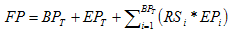

| Estimation Considerations: Solution Recovery Strategy (Legacy) |
 |
|
| Related Elements |
|---|
This work should be undertaken as a core element of integrated solution design. The valid solution states should already be under development, if not complete, when this work product is constructed. Similarly, the information states of each end point that define these solution states should also be known. Assuming that these conditions exist, the core of the intellectual effort consists of making the right selections for the recoverable business states, and for the end point information recovered states that support them. The remaining effort is in documenting the details of these decisions. To make a precise estimate, you should calculate the number of function points analyzed as a function of end points exercised by each business process and the number of associated recoverable states for each process.  where:
Allocate 2 hours per function point analyzed. As an example, if 5 end points are involved, and there are 2 recoverable states possible, this yields an estimate of 32 hours to construct a strategy confined to that single business process. If the number of recoverable states are not yet known for each process, then group the processes by complexity and assume the following recoverable state values:
|
| © Copyright IBM Corp. 1987, 2012 All Rights Reserved Property of IBM These materials are intended only for use as part of an IBM engagement |